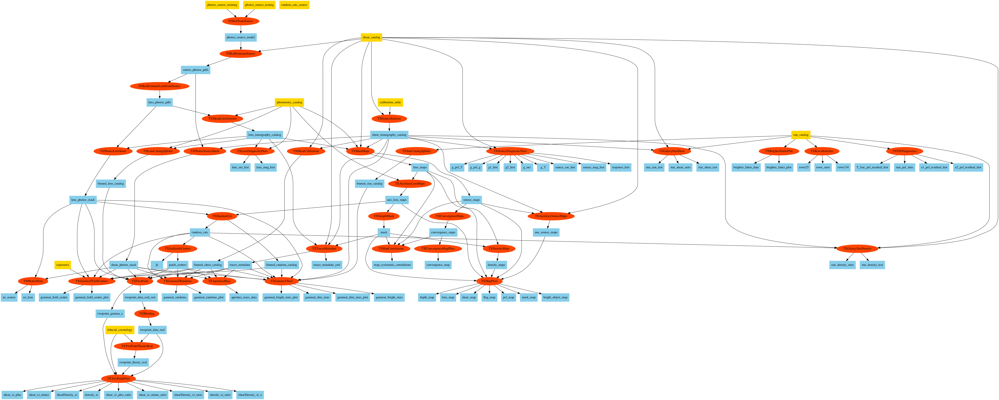

Running an example pipeline
Running
You can download data for a test pipeline like this:
and run that test pipeline like this:
Overview
When you do this, the following things are happening under the hood:
The
ceciprogram reads the pipeline yml file and finds a list of python modules to read. In those modules, any subclass of the ceciPipelineStageclass is a stage of the analysis that can be executed, and specifies the inputs and outpits from that stage.cecireads the list of stages from the pipeline yml file, and finds all the corresponding classes. It connects stages together so that the inputs of earlier ones can be the outputs of later ones. The yml file also lists initial inputs for the overall pipeline.ceciruns the stages one by one, printing out the command line it uses. The outputs and logs of the tasks are put in locations defines in the pipeline yml.When each stage is run, it is passed inputs, outputs, and the path to a configuration file, in this case
examples/config/laptop_config.yml. This is searched for configuration information for the stage, which is stored in a dictionary attribute on the stage,stage.config.The
runmethod on the stage is called to do the actual work of the stage. This method calls other methods to find the paths to its inputs and outputs, but otherwise can perform the calculation however it wishes.
The Example Pipeline
The example pipeline runs on 1 square degree of simulated sky. This is too small to check any numerical results, and is just designed to test that the code runs without crashing.
A flow chart showing the steps in the pipeline and the files it generates is shown below (you may have to open it in its own browser tab to see the details).
{kind=link}
You can make your charts like this using (requires pygraphviz):
python bin/flow_chart.py examples/laptop_pipeline.yml laptop.png
Results
Once the pipeline is complete, the results will be stored in data/example/outputs. Some are PNG images you can look at directly. Others are HDF5 files - see <Reading HDF5 Files>.